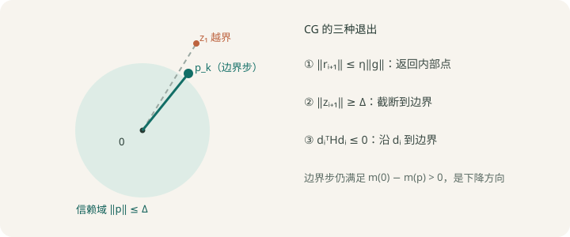

7.1.3 信赖域 Newton–CG 方法：在半径约束下截断共轭梯度
信赖域方法每步在半径 Δₖ 内极小化二次模型 m(p)=gₖᵀp+½pᵀHₖp。Hₖ 可能不定且规模巨大，于是用共轭梯度法近似求解这个带约束子问题，只依赖 Hessian–向量乘积，并在残差达标、触及边界或负曲率时退出。
信赖域子问题
信赖域方法在每次迭代先用二阶 Taylor 展开构造局部模型 m(p)=gₖᵀp+½pᵀHₖp，其中 gₖ=∇f(xₖ)、Hₖ=∇²f(xₖ)。然后在一个以原点为中心、半径 Δₖ 的球内极小化模型：
半径 Δₖ 把步长限制在一个可信区域内，因此不要求 Hₖ 正定。这是它相对线搜索 Newton–CG 的关键区别：不定 Hessian 不会再让算法失去意义，子问题的最优解会自然落在边界上。
直接求解这个带约束子问题的精确解法代价很高（需解长期方程），所以采用迭代近似。Newton–CG 用共轭梯度法，但要把它限制在球内。
三种退出方式
CG 内迭代从 z₀=0、r₀=g、d₀=−r₀ 出发，每一步检查三件事，任一成立就返回：
（1）残差达标：若 ‖rᵢ₊₁‖ ≤ η‖g‖，返回内部点 zᵢ₊₁；（2）触及边界：若 ‖zᵢ₊₁‖ ≥ Δ，返回边界点 zᵢ+τ dᵢ；（3）负曲率：若 dᵢᵀH dᵢ ≤ 0，沿 dᵢ 前进到边界并返回 zᵢ+τ dᵢ。
三种退出返回的点都在信赖域内，且都是下降方向（gᵀp<0）。负曲率分支尤其重要：当 H 不定时，子问题的最优解往往在边界上，而不是内部驻点。
边界截断：把当前的 zᵢ 与方向 dᵢ 代入，解二次方程得到最小的 τ≥0，使 zᵢ+τ dᵢ 恰好落在半径 Δ 的球面上。
边界截断的计算
边界步的关键是求出步长 τ。要求 ‖zᵢ+τ dᵢ‖=Δ，展开平方得到关于 τ 的一元二次方程：
因为 ‖zᵢ‖ ≤ Δ，判别式非负，取最小的非负根就得到边界步。把上述规则与残差停止、负曲率处理合在一起，就是信赖域 Newton–CG（Steihaug 方法）的完整内循环。每一步只需一次 Hessian–向量乘积 H dᵢ，无需分解 H。
二维可复现算例
沿用 H=[[4,1],[1,3]]、g=(−4,−6)。CG 第一步沿 d₀=−g=(4,6) 前进，α₀=52/220≈0.2364，得到 z₁≈(0.9455,1.4182)，其范数约 1.7044。
（1）Δ=1：‖z₁‖≈1.7044>1 越界，τ=1/‖d₀‖≈0.1387，返回边界步 (0.5547,0.8321)，范数恰为 1，模型下降约 5.0957>0。
（2）Δ=5：不会越界，两步后残差归零，返回精确解 (6/11,20/11)。
（3）对不定 H=diag(1,−1)、g=(1,1)、Δ=1，初始方向 d₀=(−1,−1) 满足 d₀ᵀHd₀=0，程序按负曲率规则返回边界点 (−0.7071,−0.7071)。
以上均为教学示意，用来区分三种退出，不是对任何真实大规模问题的性能测量。

交互：forcing 项与半径如何决定退出
固定 H=[[4,1],[1,3]]、g=(−4,−6)，用滑块同时调节 forcing 项 η 与信赖域半径 Δ。面板实时报告退出原因、返回步范数与模型下降。
实时内迭代检查
拖动 Δ：较小时输出由“触及边界”主导，较大时转为“残差达标”。拖动 η：较大时更早停止。
Python：边界截断与三种退出
下面的程序只依赖标准库。它实现信赖域 Newton–CG 的内循环，重现上面的边界、精确解与负曲率算例，并断言退出原因、步长范数与模型下降。
"""Trust-region Newton-CG (Steihaug): boundary and negative-curvature exits."""
def matvec(M, v):
return (M[0][0]*v[0] + M[0][1]*v[1], M[1][0]*v[0] + M[1][1]*v[1])
def dot(u, v):
return u[0]*v[0] + u[1]*v[1]
def norm(v):
return dot(v, v) ** 0.5
def boundary_tau(z, d, Delta):
"""Smallest tau >= 0 with ||z + tau*d|| = Delta."""
zd, dd, zz = dot(z, d), dot(d, d), dot(z, z)
return (-zd + (zd*zd + dd*(Delta*Delta - zz)) ** 0.5) / dd
def tr_cg(H, g, Delta, eta=0.0, max_iter=10):
"""Approximately minimize m(p)=g.p+0.5 p.Hp inside ||p|| <= Delta."""
z, r = (0.0, 0.0), (g[0], g[1])
d, rr = (-r[0], -r[1]), dot(r, r)
for i in range(max_iter):
Hd = matvec(H, d)
curvature = dot(d, Hd)
if 0.0 >= curvature:
tau = boundary_tau(z, d, Delta)
return (z[0] + tau*d[0], z[1] + tau*d[1]), i + 1, "negative curvature"
alpha = rr / curvature
z_new = (z[0] + alpha*d[0], z[1] + alpha*d[1])
if norm(z_new) >= Delta:
tau = boundary_tau(z, d, Delta)
return (z[0] + tau*d[0], z[1] + tau*d[1]), i + 1, "boundary"
z = z_new
r = (r[0] + alpha*Hd[0], r[1] + alpha*Hd[1])
if eta * norm(g) >= norm(r):
return z, i + 1, "residual tolerance"
beta = dot(r, r) / rr
rr = dot(r, r)
d = (-r[0] + beta*d[0], -r[1] + beta*d[1])
return z, max_iter, "iteration cap"
def model_decrease(H, g, p):
return -(dot(g, p) + 0.5 * dot(p, matvec(H, p)))
def main():
H, g = ((4.0, 1.0), (1.0, 3.0)), (-4.0, -6.0)
small = tr_cg(H, g, 1.0)
large = tr_cg(H, g, 5.0, eta=1e-12)
indefinite = tr_cg(((1.0, 0.0), (0.0, -1.0)), (1.0, 1.0), 1.0)
assert small[2] == "boundary" and abs(norm(small[0]) - 1.0) < 1e-12
assert model_decrease(H, g, small[0]) > 0.0 and dot(g, small[0]) < 0.0
assert large[2] == "residual tolerance" and abs(large[0][0] - 6.0/11.0) < 1e-12
assert indefinite[2] == "negative curvature" and abs(norm(indefinite[0]) - 1.0) < 1e-12
print("Delta=1 ->", small[1], small[2], tuple(round(v, 4) for v in small[0]), "decrease", round(model_decrease(H, g, small[0]), 4))
print("Delta=5 ->", large[1], large[2], tuple(round(v, 4) for v in large[0]))
print("indefinite ->", indefinite[1], indefinite[2], tuple(round(v, 4) for v in indefinite[0]))
if __name__ == "__main__":
main()程序只处理固定的二维教学矩阵，用来验证退出规则；它不是完整信赖域求解器，不含半径更新策略、实际/预测下降比计算、预条件或非二次函数的外层循环。
这一页的边界
本文只描述信赖域 Newton–CG 的内层子问题求解，不展开半径 Δₖ 的更新规则与收敛性证明，也不涉及预条件（7.1.4）。负曲率和边界分支只保证返回一个下降的近似解，不保证它就是精确子问题最优解；实际实现还要处理数值舍入导致的小负曲率、内迭代次数上限与重正交。把这些规则当成性能保证是过度解读。